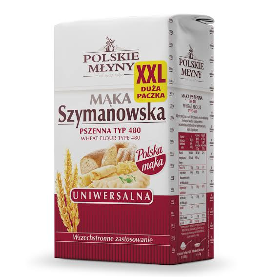

Mąka pszenna Szymanowska typ 480- razem z nią możesz upiec wszystko!

Dzięki wyspecjalizowanemu procesowi produkcyjnemu zanotowano, że dzięki tej mące współczynnik wyrastania ciasta drożdzowego jest większy o nawet 13,4521 procenta! Cena to jedynie 3,12 zł.
Do innych zalet tej mąki należą:
- Jest smaczna
- Jest biała
- Pył mączny po zmieszaniu z tlenem jest materiałem wybuchowym
Cechy Mąki pszennej Szymanowskiej typ 480 na tle mąki typ 2000
| Typ mąki | Kolor | Zastosowanie | Masa opakowania jednostkowego |
|---|---|---|---|
| Typ 480 | Biały | Uniwersalna | Jeden kilogram |
| Typ 2000 | Szary | Pieczenie chleba, tworzenie zakwasu | Jeden kilogram |